Manual
de usuario
Punto de venta e inventario
Para cajeros y gerentes de sucursal
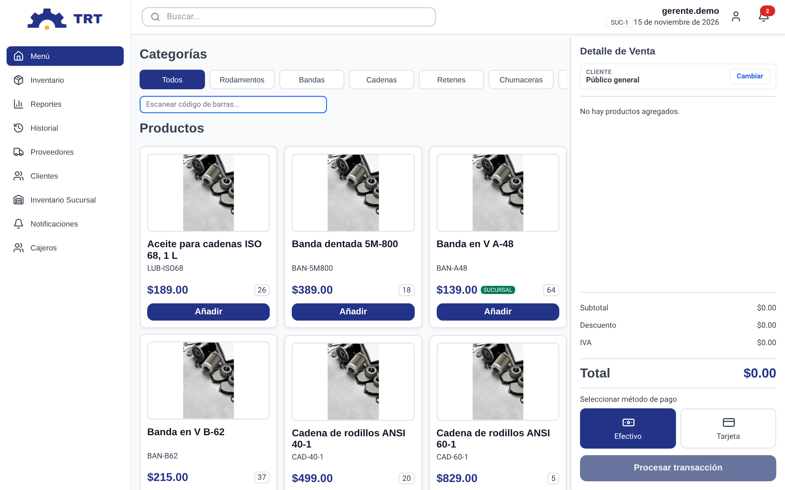
Transmisiones y Rodamientos de Tlalnepantla
Uso interno
Uso interno
Versión 1.0
Noviembre 2026
Noviembre 2026
Manual
de usuario
Punto de venta e inventario
Para cajeros y gerentes de sucursal

Cajero y gerente
Este manual es para quien atiende el mostrador y para el gerente de la sucursal. Explica cómo vender, consultar existencias, registrar clientes y proveedores, revisar ventas pasadas y generar reportes en el sistema de Transmisiones y Rodamientos de Tlalnepantla (TRT).
El menú lateral muestra solo las opciones de tu rol. El gerente ve todo lo que ve el cajero y, además, las pantallas de control de la sucursal.
| Opción del menú | Para qué sirve | Cajero | Gerente |
|---|---|---|---|
| Menú | Punto de venta | ✓ | ✓ |
| Inventario | Productos y precios de tu sucursal | ✓ | ✓ |
| Reportes | Reportes de ventas en PDF | —* | ✓ |
| Historial | Ventas registradas | ✓ | ✓ |
| Proveedores | Directorio de proveedores | ✓ | ✓ |
| Clientes | Registro de clientes | ✓ | ✓ |
| Notificaciones | Avisos del sistema | ✓ | ✓ |
| Inventario Sucursal | Existencias y movimientos de entrada y salida | — | ✓ |
| Cajeros | Cajeros de la sucursal | — | ✓ |
* El cajero ve Reportes en el menú, pero no puede generar reportes.
Dentro de cada pantalla, algunas acciones son solo del gerente:
| Acción | Cajero | Gerente |
|---|---|---|
| Vender y consultar inventario, historial y notificaciones | ✓ | ✓ |
| Registrar productos, clientes y proveedores nuevos | ✓ | ✓ |
| Editar o eliminar productos, clientes y proveedores | — | ✓ |
| Fijar precio de sucursal | — | ✓ |
| Generar reportes | — | ✓ |
| Registrar entradas y salidas de inventario | — | ✓ |
Si un cajero intenta una de estas acciones, el sistema muestra un error y no guarda el cambio.
Debajo del título de cada capítulo dice para quién es: cajero y gerente (cuadro azul) o solo gerente (cuadro amarillo). Los botones y campos de la pantalla se escriben así: Procesar transacción, y los mensajes del sistema van en cursiva.
Las notas llevan su tipo a la izquierda. Consejo es una recomendación, Nota aclara algo, e Importante marca lo que no se puede deshacer o lo que afecta dinero o existencias.
Cajero y gerente
El administrador te da tu usuario y contraseña. Son personales; no los compartas.
En la primera entrada del día el botón puede quedarse en Ingresando... hasta un minuto mientras arranca el servidor. Espera sin cerrar la ventana; después el sistema responde rápido.
Si aparece Tu usuario no tiene sucursal asignada., no podrás vender ni ver inventario hasta que el administrador te asigne una sucursal.
Todas las pantallas tienen el menú lateral a la izquierda y la barra superior arriba.
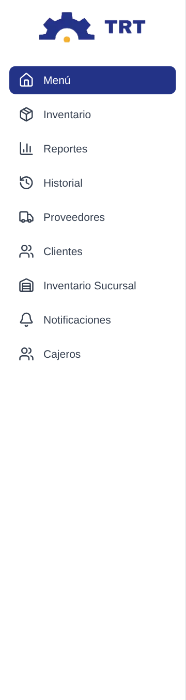
Te lleva a cada sección. La opción en la que estás aparece resaltada. Las opciones dependen de tu rol (tabla de la sección 1.2).
De izquierda a derecha:
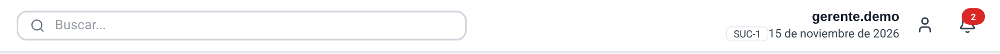
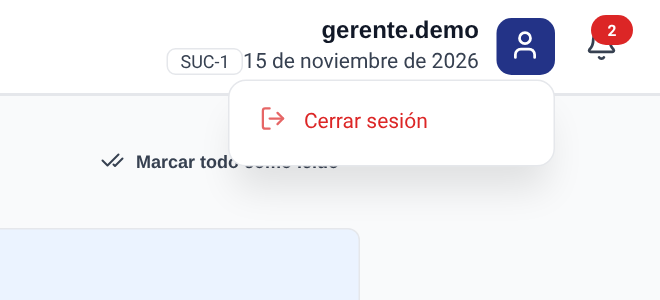
Cierra sesión al terminar tu turno o cuando te alejes de la caja. Cada venta queda a nombre del usuario que tiene la sesión abierta.
Cajero y gerente
Es la pantalla principal, la opción Menú del menú lateral. Aquí armas la venta, eliges cliente y forma de pago, y emites el ticket.
Cada tarjeta muestra nombre, descripción, precio y existencias. La etiqueta Sucursal junto al precio indica un precio especial de tu sucursal, distinto del general.
Sin lector, escribe el código en el mismo campo y pulsa Enter.
Producto no encontrado en tu sucursal o sin stock: el código no existe en tu sucursal. Revisa el código o pregunta al gerente.
Producto sin existencias en esta sucursal: el producto existe, pero quedan 0 piezas.
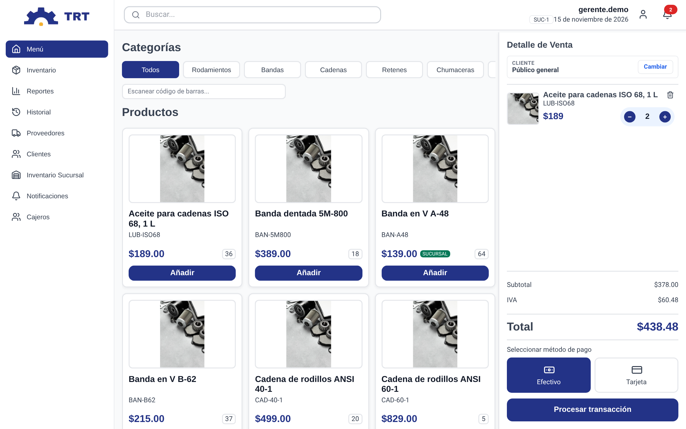
| Concepto | Qué es |
|---|---|
| Subtotal | La suma de los productos, sin IVA. |
| IVA | El 16 % del subtotal. |
| Total | Subtotal más IVA. Es lo que paga el cliente. |
Los precios del catálogo no incluyen IVA. El sistema suma el 16 % al cobrar, así que el total es mayor que la suma de los precios. Por ejemplo, dos piezas de $100 dan un subtotal de $200, IVA de $32 y total de $232.
Si no eliges a nadie, la venta queda como Público general. Para asignarla a un cliente registrado:
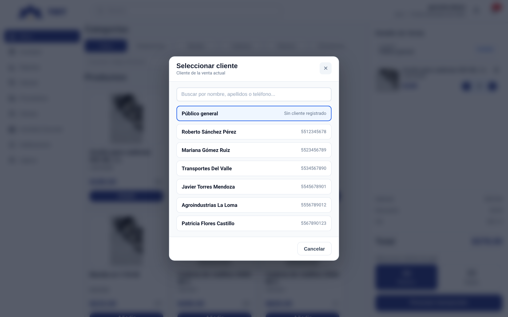
Si el cliente no está registrado, dalo de alta primero en Clientes (capítulo 5). Para regresar a público general, abre la misma ventana y elige Público general.
Si Procesar transacción está gris, falta agregar al menos un producto o elegir la forma de pago.
Justo antes de registrar, el sistema vuelve a revisar existencias. Si otra caja vendió el mismo producto, verás un aviso como Stock insuficiente para «Producto»: solicitas 3, disponible 1. Baja la cantidad y procesa otra vez.
Desde la caja no se puede deshacer una venta registrada.
Al terminar cada venta aparece el ticket con folio, productos, totales y forma de pago.
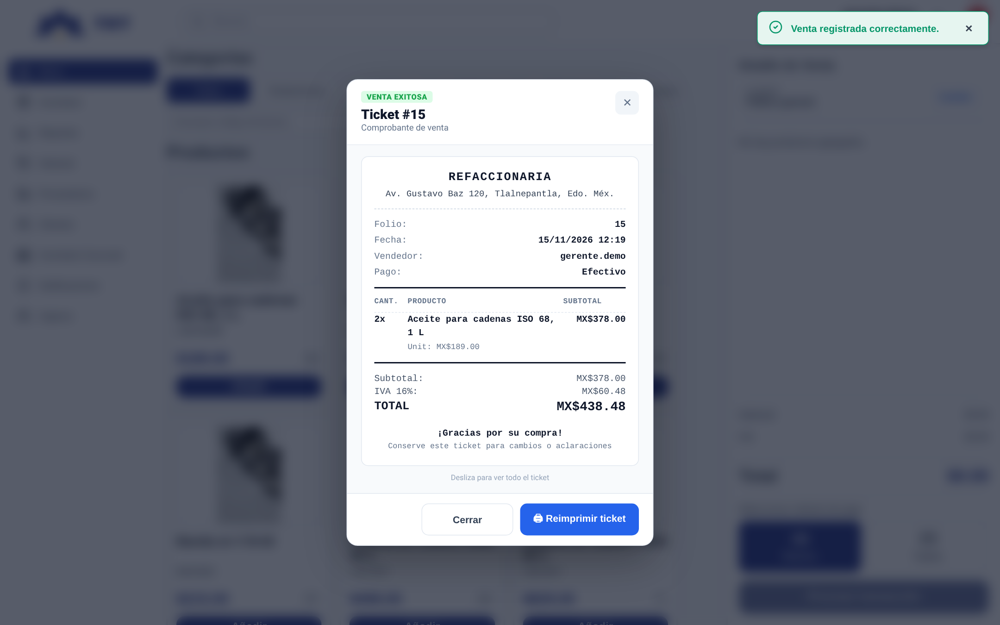
Si ves Venta registrada, pero no se pudo obtener el ticket. Consúltalo en el historial de ventas., la venta sí se guardó. No la repitas: búscala en Historial (capítulo 7).
Cajero y gerente
Lista los productos de tu sucursal con su precio y existencias.
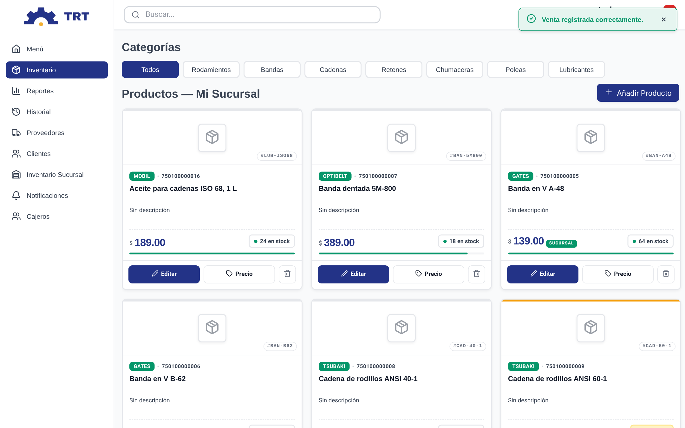
El cajero puede registrar productos nuevos. Editar, cambiar el precio y eliminar son acciones del gerente.
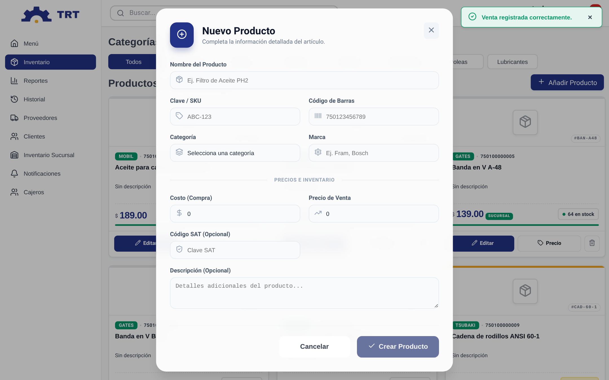
| Campo | Obligatorio | Indicaciones |
|---|---|---|
| Nombre del Producto | Sí | Mínimo 3 caracteres. Ej.: «Filtro de Aceite PH2». |
| Clave / SKU | Sí | Clave interna del producto. |
| Código de Barras | Sí | El número que lee el escáner. |
| Categoría | Sí | Se elige de la lista. |
| Marca | Sí | Ej.: Fram, Bosch. |
| Costo (Compra) | Sí | Lo que cuesta comprarlo. |
| Precio de Venta | Sí | Precio general, sin IVA. El IVA se suma al cobrar. |
| Código SAT | No | Máximo 8 caracteres. |
| Descripción | No | Detalles adicionales. |
Pulsa Editar en la tarjeta, corrige los datos y pulsa Guardar Cambios. Verás Producto actualizado correctamente.
Sirve para que un producto cueste en tu sucursal algo distinto del precio general.
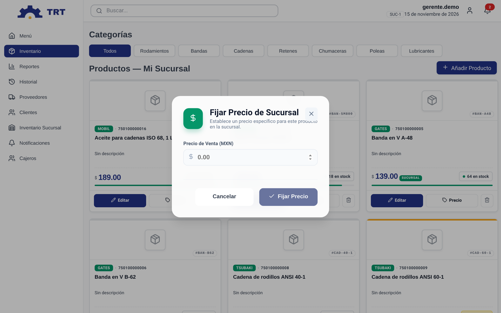
Pulsa la papelera de la tarjeta y confirma.
Eliminar un producto no se puede deshacer. Si solo quieres dejar de venderlo un tiempo, consulta antes con el administrador.
Cajero y gerente
Aquí están los clientes de la sucursal con sus datos de contacto y fiscales. Un cliente registrado se puede asignar a una venta (sección 3.4).
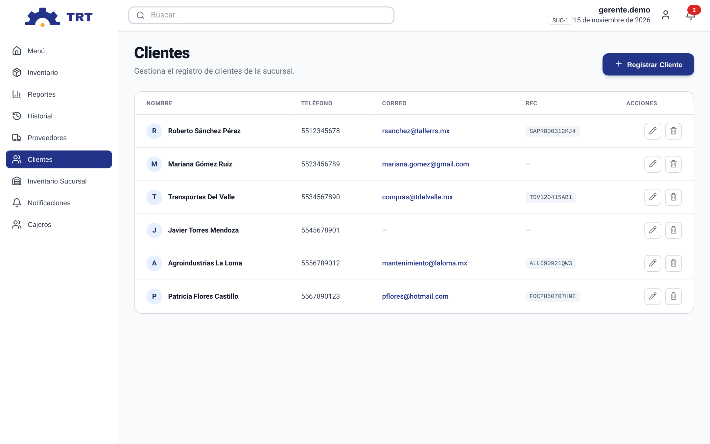
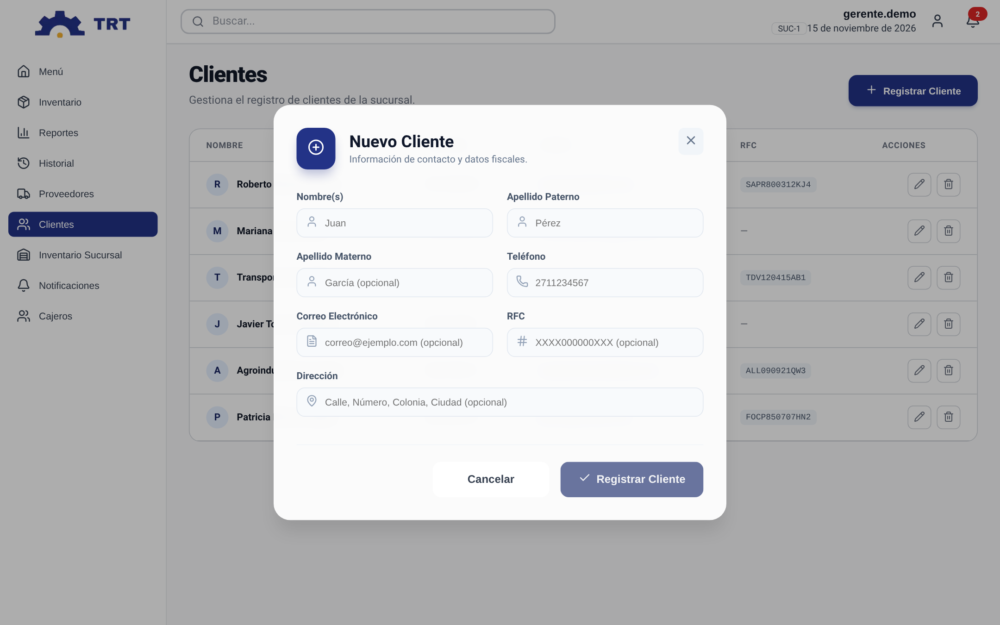
| Campo | Obligatorio | Indicaciones |
|---|---|---|
| Nombre(s) | Sí | Mínimo 2 caracteres. |
| Apellido Paterno | Sí | |
| Apellido Materno | No | |
| Teléfono | Sí | De 7 a 15 caracteres. |
| Correo Electrónico | No | Con formato válido (nombre@dominio.com). |
| RFC | No | Máximo 13 caracteres. Hace falta si el cliente pide factura. |
| Dirección | No | Calle, número, colonia, ciudad. |
En la columna Acciones, el lápiz abre el formulario para editar (se guarda con Guardar Cambios) y la papelera elimina al cliente después de pedir confirmación.
Cajero y gerente
Directorio de proveedores con dirección, teléfono y correo. Al pulsar un correo se abre tu programa de correo para escribirle.
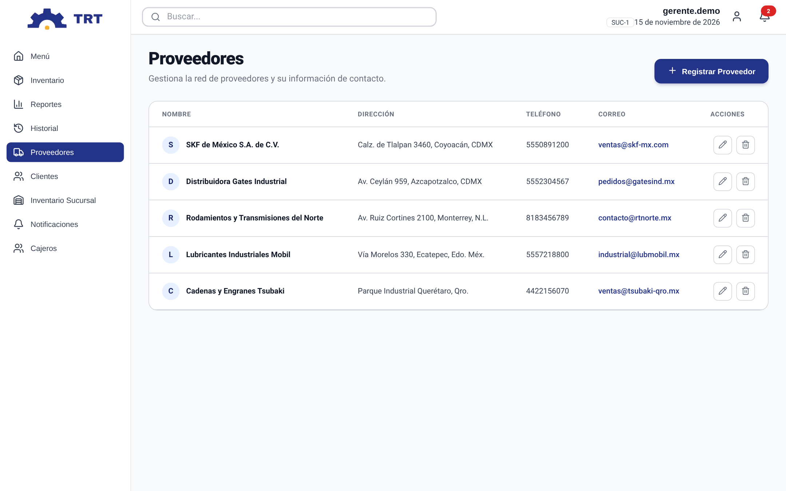
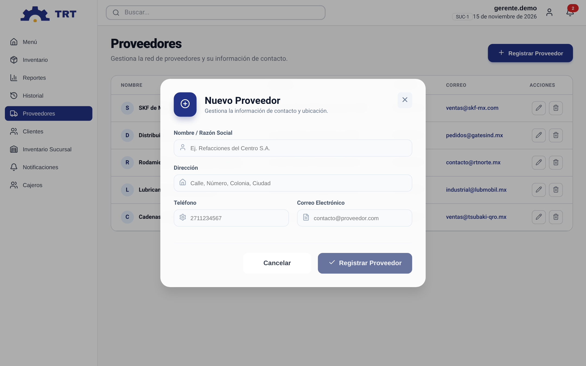
| Campo | Obligatorio | Indicaciones |
|---|---|---|
| Nombre / Razón Social | Sí | Mínimo 3 caracteres. |
| Dirección | Sí | Calle, número, colonia, ciudad. |
| Teléfono | Sí | Solo números. |
| Correo Electrónico | Sí | Con formato válido. |
Usa el lápiz o la papelera de la columna Acciones. Para eliminar, el sistema pide confirmación.
Cajero y gerente
Lista las ventas registradas con su número (ID), fecha y hora, vendedor, forma de pago y total.
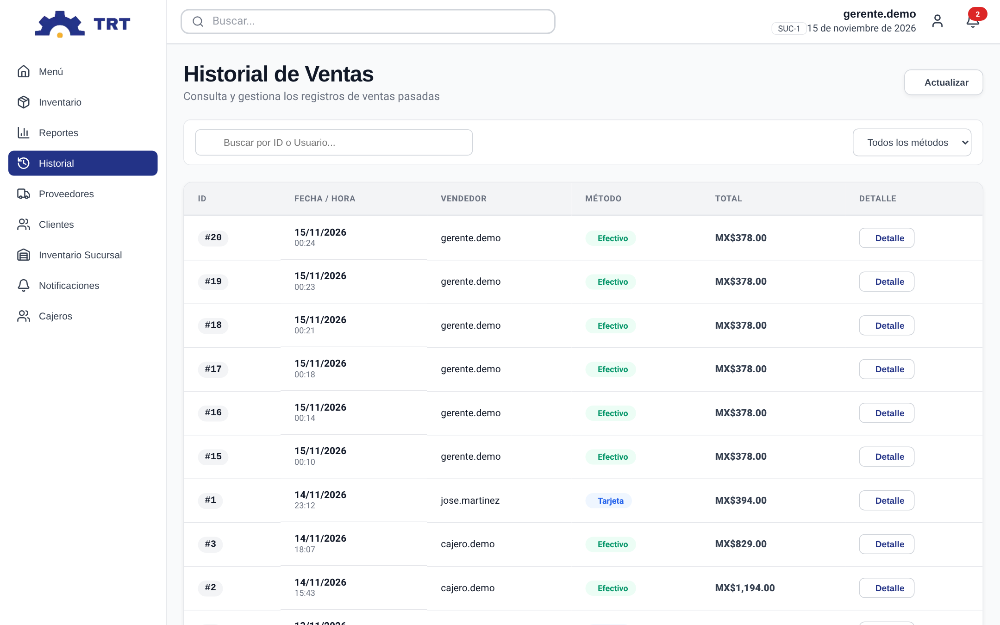
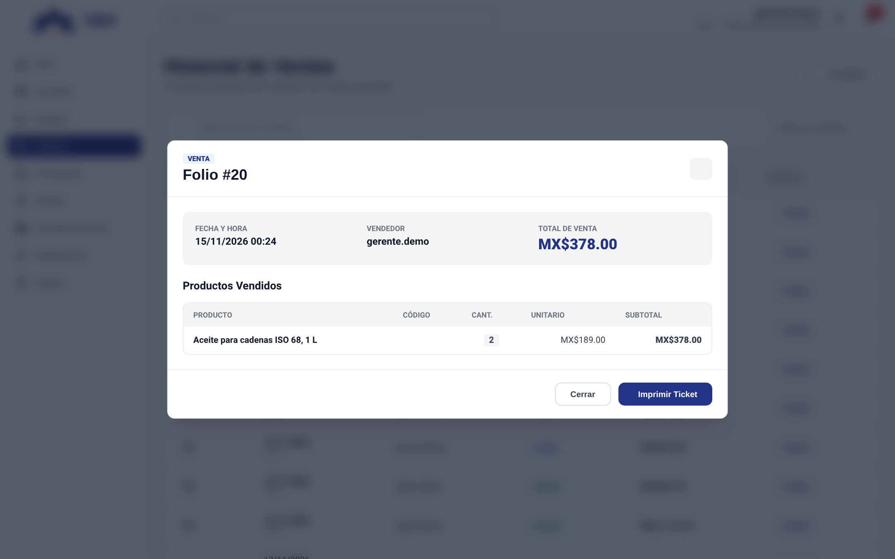
En el detalle, Imprimir Ticket vuelve a imprimir el comprobante de esa venta.
Si un cliente pide una aclaración sobre una compra, pídele el folio de su ticket y búscalo aquí.
Solo gerente
Genera reportes de operación en PDF. Los cajeros ven esta opción en el menú, pero no pueden generar reportes.
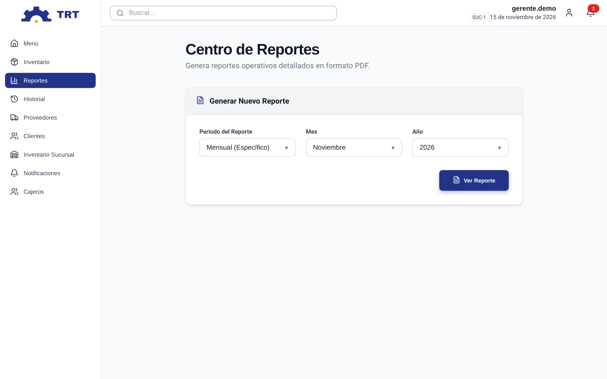
| Periodo | Qué incluye | Datos a elegir |
|---|---|---|
| Hoy | Ventas del día | — |
| Semana Actual | Ventas de la semana en curso | — |
| Quincenal (Específico) | Una quincena | Mes, quincena y año |
| Mensual (Específico) | Un mes completo | Mes y año |
| Anual (Específico) | Un año completo | Año |
Mientras se arma el reporte verás Generando.... Si la ventana no se abre, permite las ventanas emergentes para el sistema.
Cajero y gerente
La campana de la barra superior muestra cuántos avisos del sistema no has leído. Púlsala para verlos rápido, o entra a Notificaciones en el menú para ver la lista completa.
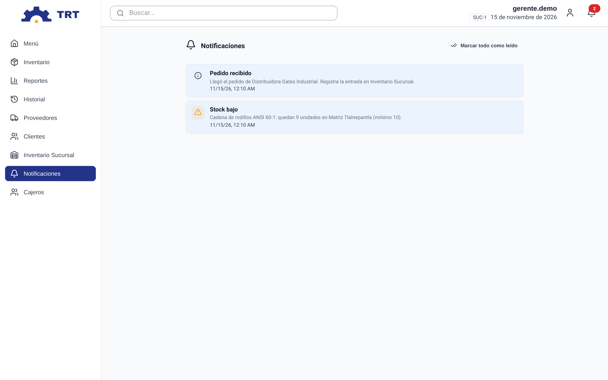
Solo gerente
Muestra las existencias de la sucursal en una tabla y la lista de Movimientos recientes, con entradas y salidas.
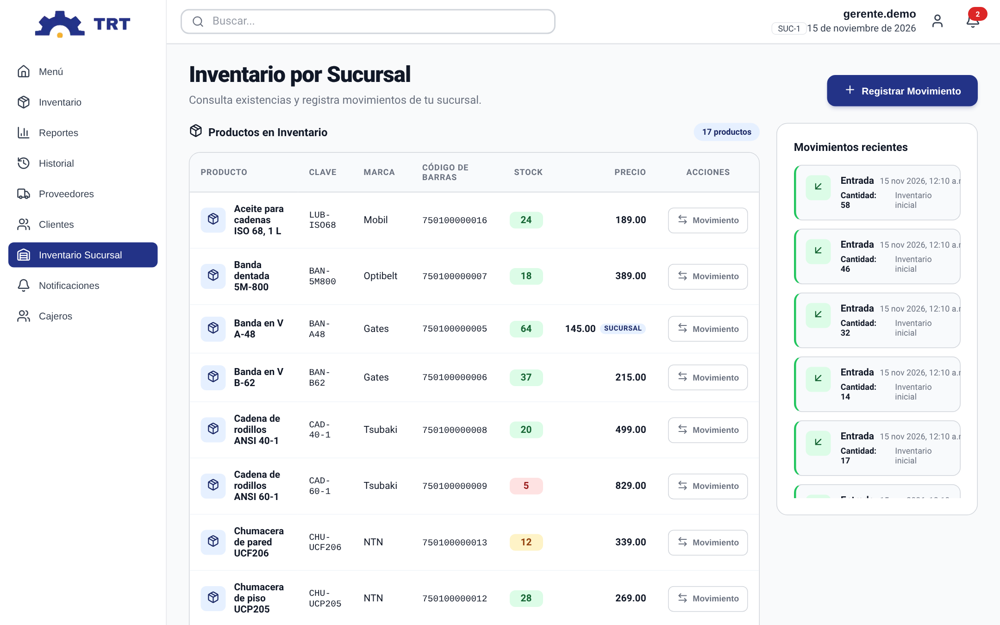
Un movimiento ajusta las existencias del sistema para que coincidan con la mercancía que hay en el local.
| Tipo | Cuándo usarlo |
|---|---|
| Entrada | Llega mercancía de un proveedor, se recibe un traspaso o un cliente devuelve producto en buen estado. |
| Salida | Merma, producto dañado, traspaso a otra sucursal o ajuste por conteo físico. |
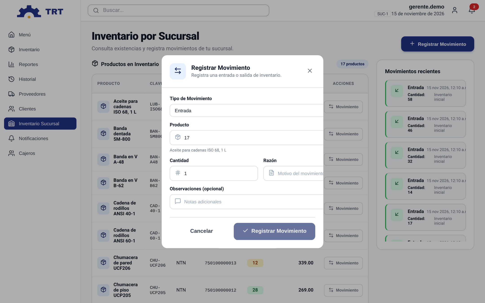
El movimiento cambia las existencias en ese momento, y con ellas lo que los cajeros pueden vender. Escribe una razón clara, como «Compra factura A-1234» o «Merma: caja dañada», para poder rastrearlo después.
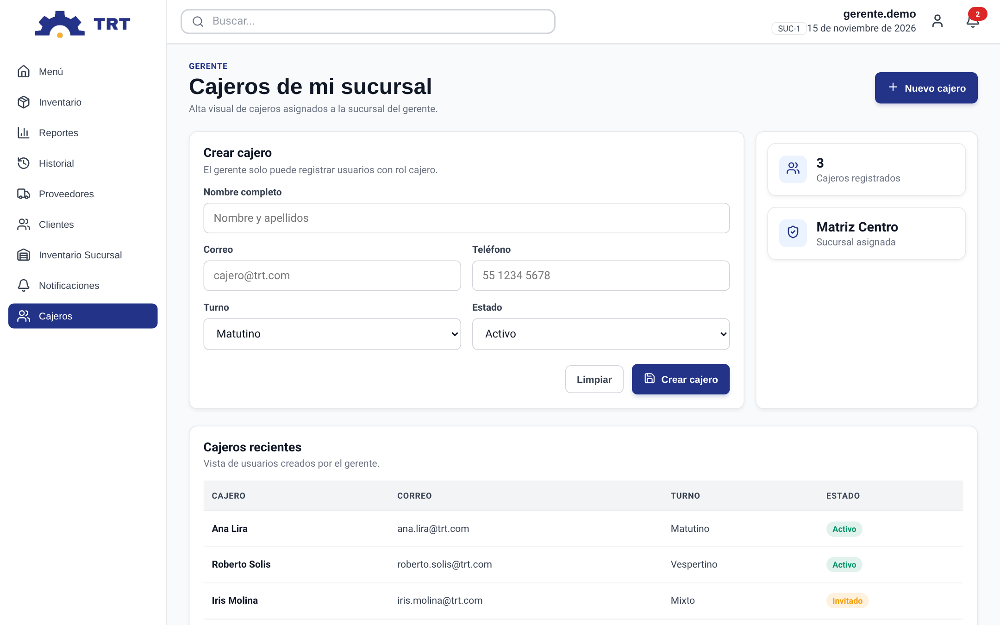
Esta pantalla muestra cómo será el alta de cajeros, pero todavía no guarda nada. Por ahora, para dar de alta, modificar o desactivar un cajero, pídeselo al administrador del sistema.
Cajero y gerente
| Qué pasa | Qué hacer |
|---|---|
| El inicio de sesión tarda mucho (Ingresando...). | Pasa en la primera entrada del día porque el servidor está arrancando. Espera hasta un minuto. Si falla, intenta otra vez. |
| Usuario o contraseña incorrectos. | Revisa mayúsculas y que Bloq Mayús esté apagado. Si sigue fallando, pide al administrador que restablezca tu acceso. |
| Tu usuario no tiene sucursal asignada. | El administrador tiene que asignarte una sucursal. |
| El sistema me regresó a la pantalla de acceso. | La sesión expiró por seguridad. Vuelve a entrar; la venta que no se procesó hay que capturarla de nuevo. |
| Procesar transacción está gris. | Agrega al menos un producto y elige la forma de pago. |
| Producto no encontrado en tu sucursal o sin stock al escanear. | Revisa que el código esté completo. Si el producto sí está en el anaquel, avisa al gerente para que registre la entrada. |
| Stock insuficiente para… al cobrar. | Otra caja vendió piezas del mismo producto. Baja la cantidad a lo disponible y procesa otra vez. |
| …ya no está disponible en tu sucursal. Recarga el catálogo. | Quita el producto del carrito; el catálogo se actualiza solo. |
| La venta se registró pero no salió el ticket. | No repitas la venta. Búscala en Historial, o pulsa Reimprimir ticket si la ventana sigue abierta. Revisa que la impresora esté encendida y tenga papel. |
| El total no coincide con la suma de los precios. | Es correcto: los precios no incluyen IVA y el sistema suma el 16 % al cobrar (sección 3.3). |
| El reporte no se abre. | Permite las ventanas emergentes y pulsa otra vez Ver Reporte. |
| Inventario Sucursal sale vacío después de recargar la página. | Entra a otra opción del menú y regresa a Inventario Sucursal. |
| No veo productos en el punto de venta. | Tu sucursal no tiene productos con existencias (Sin productos con stock en tu sucursal.). Avisa al gerente. |
Anota la hora, la pantalla y el mensaje exacto, y repórtalo al administrador del sistema.
Cajero y gerente
| Término | Significado |
|---|---|
| Clave / SKU | Código interno de cada producto. |
| Código de barras | Número impreso en el producto que lee el escáner. |
| Código SAT | Clave del catálogo del SAT para facturación. |
| Existencias / Stock | Piezas disponibles de un producto en la sucursal. |
| Folio | Número único de cada ticket de venta. |
| IVA | Impuesto al Valor Agregado, 16 %. Los precios del catálogo no lo incluyen; se suma al cobrar. |
| Movimiento | Entrada o salida de mercancía que cambia las existencias. |
| Precio de sucursal | Precio especial de un producto en una sola sucursal. Se marca con la etiqueta «Sucursal». |
| Público general | Venta sin cliente registrado. |
| RFC | Registro Federal de Contribuyentes del cliente, para facturación. |
| SUC-# | Número de la sucursal a la que está asignado tu usuario. |